This workshop illustrates working with data, continuing from Central Asia Barometer 1, which introduced working with a single wave and country of Central Asia Barometer data (Kygryzstan in 2022). The second part illustrates working with multiple waves and countries of data, illustrating more complex data merging and cleaning, additional graphics options, and suggests starting points for statistical analysis. Coding is in R, but a Python version of the material (machine-translated) is available for those who wish to replicate the steps there. Both R and Python are excellent tools for data analysis, so to some extent your choice is a matter of preference and familiarity. The R language emerged from statistics and added computing functionality, whereas Python is a general purpose computing language to which heavy doses of statistical capabilities have been added.
2 Installation
This workshop does not cover the installation of R and RStudio, but assumes that you have a working copy available.
R is open source software for statistical analysis, available at R-project.org. It is recommended to install R first. R commands can be executed by many editors and IDEs, directly in the terminal, or via script files. However, one of the most powerful and common methods, which we will use here, is to use the RStudio IDE.
RStudio, available from Posit as an open source download, is a tool for creating and running R code (and Python and a few other languages), with many helpful features and templates for working with the other formats and tools in the R ecosystem. RStudio will make use of your installed version of R, running as a layer on top. Posit is also developing Positron as a newer IDE with more flexibility to work with R, Python, and other possible languages. This workshop does not use Positron, although the code should also work there.
Both RStudio and Positron are introducing AI suggestion tools built into their interfaces that claim to work with and understand the specific code of your project. These should be preferred to using external services like ChatGPT.
For immediate use without installation, try the following:
The Posit Cloud is also a free service that allows you to use RStudio (with some limitations on time and memory) with the creation of an account.
Python is also open-source, and can be used with various editors and tools, which are not detailed here.
2.1 R help
The R help system is easy to access. Use a question mark before the name of a specific function to pull up its manual page ( ?sample or ?rnorm). Use two question marks to search The help tab in the lower right quadrant of RStudio also allows full access to the built in help, including manuals and searching.
Searching the internet for R help can be useful, since there are a wealth of tutorials, blog posts, and other material on general methods and specific R packages. It is helpful to add something like “R statistics” or “R software” or “R package” to your search to distinguish from all other uses of the letter R!
3 Setup and preparing data
3.1 R packages required
We will use the pak package for installation as a more complete approach to package management. Replace the pkg commands with install.packages() versions if you prefer.
This session relies on the tidyverse suite of packages for data manipulation as a preference, although the same tasks could be accomplished in base R using other functions. Install pak and tidyverse if you don’t already have them on your system. We will also need reticulate to run Python code chunks.
For graphics, ggplot2 will do most of the work, but lattice and several specialized helper packages will also be used.
Code
install.packages("pak", dependencies=TRUE)library(pak)pkg_install("tidyverse")pkg_install("readxl")pkg_install("reticulate")pkg_install("ggplot2") # including in tidyverse, but just making this explicitpkg_install("lattice")# helper packagespkg_install("ggthemes")pkg_install("cowplot")pkg_install("gridExtra")pkg_install("RColorBrewer")pkg_install("png")pkg_install("paletteer")pkg_install("ggiraph")# pkg_install("ggridges")# pkg_install("ggvis")# pkg_install("gganimate")# pkg_install("gapminder")# pkg_install("hexbin")# pkg_install("gifski")devtools::session_info()
Note that the update.packages() command can be run periodically to check for newer versions of any packages installed.
Load the packages up front so that we can work with them.
Code
library(readxl)library(tidyverse)
── Attaching core tidyverse packages ──────────────────────── tidyverse 2.0.0 ──
✔ dplyr 1.2.1 ✔ readr 2.2.0
✔ forcats 1.0.1 ✔ stringr 1.6.0
✔ ggplot2 4.0.2 ✔ tibble 3.3.1
✔ lubridate 1.9.5 ✔ tidyr 1.3.2
✔ purrr 1.2.1
── Conflicts ────────────────────────────────────────── tidyverse_conflicts() ──
✖ dplyr::filter() masks stats::filter()
✖ dplyr::lag() masks stats::lag()
ℹ Use the conflicted package (<http://conflicted.r-lib.org/>) to force all conflicts to become errors
Code
library(lattice)library(ggthemes)library(cowplot)
Attaching package: 'cowplot'
The following object is masked from 'package:ggthemes':
theme_map
The following object is masked from 'package:lubridate':
stamp
Code
library(gridExtra)
Attaching package: 'gridExtra'
The following object is masked from 'package:dplyr':
combine
The links to the right provide alternate modes of accessing this content. You can choose Light or Dark mode HTML, a downloadable PDF, or a Word Docx format file all representing the same content. Code files with R (.R) or Python (.py) are also available, if you’d like to isolate the code from the description.
3.3 Kyrgyz and Russian language
Also, machine-translated versions of this content in Russian and Kyrgyz are linked on the right.
3.4 Python support
Now let’s load reticulate (for Python support only). We must set the correct location of python corresponding to our system.
A Python file is provided for those who want to try out the same data steps in Python. Note that the Python file was machine-translated from R, and probably needs some work!
As discussed in the previous workshop, the Central Asia Barometer project conducts polls and surveys across the countries of Central Asia (Kazakhstan, Kyrgyzstan, Tajikistan, Turkmenistan, and Uzbekistan) and releases the results on a regular basis. Except for the latest wave of data, the CA Barometer data is freely downloadable from their website after providing a contact e-mail. These surveys examine contemporary political and social attitudes, and allow for longitudinal comparisons over time and cross-country comparisons.
In this workshop, we will combine nine files, the survey results for Kazakhstan, Kyrgyzstan, and Uzbekistan for Waves 4, 8, and 12, representing the Fall of 2018, 2020, and 2022 respectively. While more manageable than attempting to merge all countries over even more waves, this gives us a sense of the greater complexity involved with comparisons across countries and over time.
4.1 Understanding the data
Before worrying about coding or statistical analysis, the first step in working with real-world data is to develop an understanding of its structure and meaning. We want to know what data has been collected, how it has been organized, and think about what kinds of questions it can answer. Only then can we know how to properly proceed with analyzing it.
For CA Barometer, this means looking at many files. As previously, you will need to fill out the form on the CA Barometer site before the links will be accessible. The complete list is below:
We download data from Central Asia Barometer using the links above. Note links are additionally provided for Tajikistan and Turkmenistan, but we will not be using them in this workshop.
Now we must merge the data. Along the way, we discover some inconsistencies that must be cleaned up in order to merge into one coherent file. For example, Country is sometimes abbreviated, sometimes represented as variable MM4.
Code
data_22_KG <-mutate(data_22_KG, Country ='Kyrgyzstan')data_20_KG <-mutate(data_20_KG, Country ='Kyrgyzstan')# data_18_KG <- mutate(data_18_KG, Country = 'KG')data_22_KZ <-mutate(data_22_KZ, Country ='Kazakhstan')data_20_KZ <-mutate(data_20_KZ, Country ='Kazakhstan')# data_18_KZ <- mutate(data_18_KZ, Country = 'KZ')data_22_UZ <-mutate(data_22_UZ, Country ='Uzbekistan')data_20_UZ <-mutate(data_20_UZ, Country ='Uzbekistan')# data_18_UZ <- mutate(data_18_UZ, Country = 'UZ')data_22_TM <-mutate(data_22_TM, Country ='Turkmenistan')# data_20_TM <- mutate(data_20_TM, Country = 'TM')# data_18_TM <- mutate(data_18_TM, Country = 'TM')data_22_TJ <-mutate(data_22_TJ, Country ='Tajikistan')data_20_TJ <-mutate(data_20_TJ, Country ='Tajikistan')# data_18_TJ <- mutate(data_18_TJ, Country = 'TJ')
6.1 trying with rbind
The rbind command is useful for simple, literal combinations of rows of data (cbind is the equivalent to combine columns). However, this method requires that all variables align perfectly between datasets to be combined. We discover some discrepancies when we attempt this.
That generates an error, so let’s study the differences between the datasets with setdiff. Then use full_join to generate a merged dataset that includes all variables. This turns up a problem with incompatible formats in the Year file that will be fixed in the Data cleaning section.
As we delve into the data, we discover inconsistencies, such as the formatting of years. Also, date is MM6 in 2018, but labeled ‘Year’ – gotta watch those questionnaires! We do not care about this level of detail, so let’s introduce a similar “Year” variable into the data. This will also overwrite the variable type, but we can double check it. Finally, rename all to ‘Year’ for consistency.
We could merge and work with the entire group of datasets, merging the 9 files together, 3 years x 3 countries. We’d then have access to all the variables. But that is likely to be a lot of work to iron out compatibility. It might be good to do that for a long term project, but we are still just experimenting.
So to take things on a smaller scale, let’s just select our variables of interest first. We will pre-clean those and check the variables for compatibility. Then merge the smaller selections, to make the output more comprehensible and browseable.
We look at the smaller 2018 survey first to try to isolate things that are comparable across all years. Questions themselves, their labeling, and naming, does change over time.
In 2018, an interesting question was “what currency do you keep your savings in?” (DD9d), but unfortunately this question did not continue to 2020 and 2022.
We end up looking over the questionnaires quite a bit, but a serious long-term researcher will do even more of that as they try to isolate the most compatible and stable data over time and countries.
Another interesting question is the percentage of income a household receives from remittances (DD9a). Although this question was not asked in 2020, we will capture it to compare 2018 to 2022.
Other standard variables are Gender (DD1), Age (DD2), Marital Status (DD3), Education, (DD4), and Employment Status (DD6a).
There are questions on how favorably residents of a country view the following countries: China (E1a), Russia (E1b), and the USA (E1c).
Also questions on the level of trust in the following news sources: Television (A2a), Newspaper (A2b), Radio (A2c). However this question doesn’t continue consistently in later waves, so we use information about the “Main Source of News” (A1a).
Another useful demographic variable is language spoken at home. This variable is coded as DD11 in 2018 and 2022, but DD9 in 2020. This is the type of small fixes that we must undertake in data cleanup.
To capture sentiment, we’ll look at if the Country’s Financial Situation is getting better or worse (B4a, or B2 in 2018) versus an individual family’s situation is getting better or worse (B4b, or B5a in 2018).
Finally, we’ll capture the question of whether the Country is going in the Right or Wrong direction (D1).
We’ll also need to include the Country and Year variables.
My final list of selected variables DD1 Gender DD2 Age DD3 Marital (Status) DD4 Education DD6a Employment
D1 Direction (Right or Wrong)
E1a China_Favor E1b Russia_Favor E1c USA_Favor
DD9a Remit (Remittances in 2018, 2022)
A1a Main_News (Source)
DD11 Language (at Home) DD9 in 2020
B4a Country_Fin_Sit (B2 in 2018) B4b Family_Fin_Sit (B5a in 2018)
plus keep Country, Year
We will first merge the data files with full_join, so that we have one multi-country file for each year. We discover another little problem with the 2018 Uzbek variable HHLandlines that needs reformatting to be consistent with others. Typical data cleaning!
# mydata2018 <- full_join(mydata2018, data_18_UZ)# a problem with $$HHLandlines in last linedata_18_UZ$HHLandlines <-as.character(data_18_UZ$HHLandlines)mydata2018 <-full_join(mydata2018, data_18_UZ)
Check the names and then rename them to friendlier text names. Then select the list of variables of interest. There are few extra little twists in the code below, driven by quirks in the data. Especially some naming surprises in the 2018 data, since they already use text names, just differently and undocumented!
mydata2022 <- mydata2022 |>rename('Sex'='DD1', 'Age'='DD2', 'Marital'='DD3','Education'='DD4', 'Employment'='DD6a', 'Direction'='D1', 'China_Favor'='E1a','Russia_Favor'='E1b','USA_Favor'='E1c','Main_News'='A1a', 'Remit'='DD9a','Language'='DD11','Country_Fin_Sit'='B4a','Family_Fin_Sit'='B4b')mydata2022_select <- mydata2022 |>select('Sex', 'Age', 'Marital', 'Education', 'Employment', 'Direction', 'China_Favor','Russia_Favor','USA_Favor', 'Main_News', 'Remit', 'Language','Country_Fin_Sit','Family_Fin_Sit', 'Country', 'Year')# note we rename Year here from MM8mydata2020 <- mydata2020 |>rename('Sex'='DD1', 'Age'='DD2', 'Marital'='DD3','Education'='DD4', 'Employment'='DD6a', 'Direction'='D1', 'China_Favor'='E1a','Russia_Favor'='E1b','USA_Favor'='E1c','Main_News'='A1a', 'Language'='DD9','Country_Fin_Sit'='B4a', 'Family_Fin_Sit'='B4b','Year'='MM8')mydata2020_select <- mydata2020 |>select('Sex', 'Age', 'Marital', 'Education', 'Employment', 'Direction', 'China_Favor','Russia_Favor','USA_Favor', 'Main_News', 'Language','Country_Fin_Sit','Family_Fin_Sit', 'Country', 'Year')# need to add a blank 'Remit' variable heremydata2020_select <- mydata2020_select |>mutate(Remit=NA)# and 2018 data already uses the names, but formatted differently# codebook is not satisfactory, does not describe these labels, have to judge by answers in some cases# note the 'LangExtra' to avoid repeating a namemydata2018 <- mydata2018 |>rename('Sex'='Gender', 'Marital'='MarriageStat2','Education'='EducLevel_M', 'Employment'='Work', 'Direction'='RiteRong_M', 'China_Favor'='OpinionChina','Russia_Favor'='OpinionRussia','USA_Favor'='OpinionUSA','Main_News'='MainNews_M', 'Language'='Homelang','LangExtra'='Language','Country_Fin_Sit'='TodayEcSit_M', 'Family_Fin_Sit'='Lastyear_M','Remit'='IncomeOut')mydata2018_select <- mydata2018 |>select('Sex', 'Age', 'Marital', 'Education', 'Employment', 'Direction', 'China_Favor','Russia_Favor','USA_Favor', 'Main_News', 'Language','Country_Fin_Sit', 'Remit','Family_Fin_Sit', 'Country', 'Year')
We could try more full joins, but since we have already manually reset the variable names to be consistent across all three years, here we can simply to a direct rbind to paste the three files together, and then double check that it came out as expected.
tibble [15,029 × 16] (S3: tbl_df/tbl/data.frame)
$ Sex : chr [1:15029] "Female" "Female" "Female" "Female" ...
$ Age : num [1:15029] 29 83 48 37 43 60 34 42 18 55 ...
$ Marital : chr [1:15029] "Single" "Widowed or divorced" "Single" "Married" ...
$ Education : chr [1:15029] "Complete higher education" "Complete higher education" "Vocational (vocational school, lyceum etc.)" "Complete higher education" ...
$ Employment : chr [1:15029] "Unemployed and actively seeking employment" "Retired" "Unemployed and actively seeking employment" "Working part-time" ...
$ Direction : chr [1:15029] "Right direction" "Wrong direction" "Don't Know (vol.)" "Wrong direction" ...
$ China_Favor : chr [1:15029] "Very Unfavorable" "Somewhat Favorable" "Somewhat Favorable" "Somewhat Favorable" ...
$ Russia_Favor : chr [1:15029] "Very Favorable" "Very Favorable" "Somewhat Favorable" "Don't Know (vol.)" ...
$ USA_Favor : chr [1:15029] "Somewhat Unfavorable" "Don't Know (vol.)" "Somewhat Unfavorable" "Don't Know (vol.)" ...
$ Main_News : chr [1:15029] "Internet" "Russian television stations" "Russian television stations" "Internet" ...
$ Language : chr [1:15029] "Russian" "Russian" "Russian" "Russian" ...
$ Country_Fin_Sit: chr [1:15029] "About the Same" "About the Same" "Don't Know (vol.)" "About the Same" ...
$ Remit : chr [1:15029] "Not Applicable / No Relatives Abroad / No Remittances from Abroad (vol.)" "Not Applicable / No Relatives Abroad / No Remittances from Abroad (vol.)" "Not Applicable / No Relatives Abroad / No Remittances from Abroad (vol.)" "Not Applicable / No Relatives Abroad / No Remittances from Abroad (vol.)" ...
$ Family_Fin_Sit : chr [1:15029] "Become Worse" "Become Worse" "Become Worse" "Stayed the Same" ...
$ Country : chr [1:15029] "Kyrgyzstan" "Kyrgyzstan" "Kyrgyzstan" "Kyrgyzstan" ...
$ Year : num [1:15029] 2018 2018 2018 2018 2018 ...
Code
summary(my_final_data)
Sex Age Marital Education
Length:15029 Min. :18.00 Length:15029 Length:15029
Class :character 1st Qu.:27.00 Class :character Class :character
Mode :character Median :35.00 Mode :character Mode :character
Mean :37.92
3rd Qu.:47.00
Max. :98.00
Employment Direction China_Favor Russia_Favor
Length:15029 Length:15029 Length:15029 Length:15029
Class :character Class :character Class :character Class :character
Mode :character Mode :character Mode :character Mode :character
USA_Favor Main_News Language Country_Fin_Sit
Length:15029 Length:15029 Length:15029 Length:15029
Class :character Class :character Class :character Class :character
Mode :character Mode :character Mode :character Mode :character
Remit Family_Fin_Sit Country Year
Length:15029 Length:15029 Length:15029 Min. :2018
Class :character Class :character Class :character 1st Qu.:2018
Mode :character Mode :character Mode :character Median :2020
Mean :2020
3rd Qu.:2022
Max. :2022
Code
attach(my_final_data)
8.2 Descriptive statistics
Let’s take a look at several of these variables and see how they’re distributed. A simple table command will do the trick for getting initial familiarity with the data. While some large datasets are difficult to gain intuitive understanding of, for this kind of social science data, nothing beats spending time looking over the data before getting into more complex analysis. We may also discover outliers or issues to remedy before moving forward. We discover an issue with the Remittance (Remit) variable that needs to be coerced into numeric form.
We can run any cross-tabs by listing two variables in the table command. Many combinations can be explored (not shown here).
Marital
Don't Know (vol.) Married Refused (vol.) Single
9 10072 53 3266
Widowed or divorced
1629
Code
table(Education)
Education
Complete higher education
3825
Complete school
3161
Complete vocational - vocational school, lyceum, etc.
3176
Don't Know (vol.)
4
Finished school
1510
Incomplete higher education
1039
Incomplete school
382
Incomplete vocational education
524
No education
25
Refused (vol.)
12
Vocational (vocational school, lyceum etc.)
1371
Code
table(Employment)
Employment
A housewife
961
A housewife / househusband
1872
A student
809
Don't Know (vol.)
20
Refused (vol.)
23
Retired
1611
Unemployed and actively seeking employment
1193
Unemployed and not actively seeking employment
668
Working full-time
5842
Working part-time
2030
Code
table(Direction)
Direction
Don't Know (vol.) Not asked Refused (vol.) Right direction
1563 1500 223 9885
Wrong direction
1858
Code
table(China_Favor)
China_Favor
Don't Know (vol.) Refused (vol.) Somewhat Favorable
1986 161 5736
Somewhat Unfavorable Very Favorable Very Unfavorable
2739 1811 2596
Code
table(Sex)
Sex
Female Male
7501 7528
Code
table(Russia_Favor)
Russia_Favor
Don't Know (vol.) Refused (vol.) Somewhat Favorable
1116 105 7439
Somewhat Unfavorable Very Favorable Very Unfavorable
1367 4282 720
Code
table(USA_Favor)
USA_Favor
Don't Know (vol.) Refused (vol.) Somewhat Favorable
3213 193 4734
Somewhat Unfavorable Very Favorable Very Unfavorable
2714 2113 2062
Code
table(Main_News)
Main_News
Don't Know (vol.)
333
Family, friends, or neighbors
313
Internet
5397
Internet: blogs, others
614
Local radio
33
Non-government newspapers published in our country
11
None / Not interested in news (vol.)
337
Other (vol.)
52
Other foreign news sources
11
Other television stations
11
Our country's national television stations
5526
Our government's newspapers
71
Radio
40
Refused (vol.)
23
Religious services or literature
10
Russian newspapers
5
Russian radio
13
Russian television stations
263
Social media sites or messengers
1966
Code
table(Country_Fin_Sit)
Country_Fin_Sit
About the Same Don't Know (vol.) Much Better Much Worse
2790 555 3292 1745
Refused (vol.) Somewhat Better Somewhat Worse
73 4188 2386
Family_Fin_Sit
About the same Become Better Become Worse Don't Know (vol.)
3658 2446 453 148
Much better Much Better Much worse Much Worse
1041 705 255 611
Refused (vol.) Somewhat better Somewhat Better Somewhat worse
50 1371 1323 427
Somewhat Worse Stayed the Same
987 1554
Code
table(Country)
Country
Kazakhstan Kyrgyzstan Uzbekistan
5011 5018 5000
Code
table(Year)
Year
2018 2019 2020 2022
4473 27 6000 4529
Code
table(Direction, Sex)
Sex
Direction Female Male
Don't Know (vol.) 883 680
Not asked 629 871
Refused (vol.) 101 122
Right direction 4993 4892
Wrong direction 895 963
Code
table(Marital, Employment)
Employment
Marital A housewife A housewife / househusband A student
Don't Know (vol.) 1 1 0
Married 834 1616 80
Refused (vol.) 5 2 2
Single 54 136 720
Widowed or divorced 67 117 7
Employment
Marital Don't Know (vol.) Refused (vol.) Retired
Don't Know (vol.) 0 0 0
Married 16 7 988
Refused (vol.) 0 10 3
Single 2 5 65
Widowed or divorced 2 1 555
Employment
Marital Unemployed and actively seeking employment
Don't Know (vol.) 2
Married 777
Refused (vol.) 4
Single 318
Widowed or divorced 92
Employment
Marital Unemployed and not actively seeking employment
Don't Know (vol.) 0
Married 446
Refused (vol.) 3
Single 175
Widowed or divorced 44
Employment
Marital Working full-time Working part-time
Don't Know (vol.) 4 1
Married 3980 1328
Refused (vol.) 15 9
Single 1299 492
Widowed or divorced 544 200
Code
table(Marital, Education)
Education
Marital Complete higher education Complete school
Don't Know (vol.) 1 2
Married 2765 2285
Refused (vol.) 22 2
Single 645 564
Widowed or divorced 392 308
Education
Marital Complete vocational - vocational school, lyceum, etc.
Don't Know (vol.) 1
Married 2114
Refused (vol.) 4
Single 767
Widowed or divorced 290
Education
Marital Don't Know (vol.) Finished school
Don't Know (vol.) 1 1
Married 1 1101
Refused (vol.) 0 1
Single 1 177
Widowed or divorced 1 230
Education
Marital Incomplete higher education Incomplete school
Don't Know (vol.) 0 0
Married 367 251
Refused (vol.) 3 0
Single 619 63
Widowed or divorced 50 68
Education
Marital Incomplete vocational education No education
Don't Know (vol.) 2 0
Married 304 14
Refused (vol.) 2 1
Single 151 3
Widowed or divorced 65 7
Education
Marital Refused (vol.)
Don't Know (vol.) 0
Married 0
Refused (vol.) 9
Single 3
Widowed or divorced 0
Education
Marital Vocational (vocational school, lyceum etc.)
Don't Know (vol.) 1
Married 870
Refused (vol.) 9
Single 273
Widowed or divorced 218
Code
table(Education, Employment)
Employment
Education A housewife
Complete higher education 127
Complete school 0
Complete vocational - vocational school, lyceum, etc. 0
Don't Know (vol.) 0
Finished school 458
Incomplete higher education 19
Incomplete school 25
Incomplete vocational education 62
No education 0
Refused (vol.) 0
Vocational (vocational school, lyceum etc.) 270
Employment
Education A housewife / househusband
Complete higher education 327
Complete school 815
Complete vocational - vocational school, lyceum, etc. 541
Don't Know (vol.) 1
Finished school 0
Incomplete higher education 56
Incomplete school 77
Incomplete vocational education 47
No education 8
Refused (vol.) 0
Vocational (vocational school, lyceum etc.) 0
Employment
Education A student
Complete higher education 22
Complete school 107
Complete vocational - vocational school, lyceum, etc. 76
Don't Know (vol.) 0
Finished school 43
Incomplete higher education 440
Incomplete school 13
Incomplete vocational education 85
No education 0
Refused (vol.) 0
Vocational (vocational school, lyceum etc.) 23
Employment
Education Don't Know (vol.)
Complete higher education 8
Complete school 6
Complete vocational - vocational school, lyceum, etc. 4
Don't Know (vol.) 1
Finished school 0
Incomplete higher education 1
Incomplete school 0
Incomplete vocational education 0
No education 0
Refused (vol.) 0
Vocational (vocational school, lyceum etc.) 0
Employment
Education Refused (vol.) Retired
Complete higher education 4 355
Complete school 3 256
Complete vocational - vocational school, lyceum, etc. 0 238
Don't Know (vol.) 1 0
Finished school 3 322
Incomplete higher education 1 26
Incomplete school 1 80
Incomplete vocational education 0 68
No education 0 2
Refused (vol.) 8 0
Vocational (vocational school, lyceum etc.) 2 264
Employment
Education Unemployed and actively seeking employment
Complete higher education 196
Complete school 300
Complete vocational - vocational school, lyceum, etc. 329
Don't Know (vol.) 0
Finished school 127
Incomplete higher education 49
Incomplete school 34
Incomplete vocational education 41
No education 5
Refused (vol.) 1
Vocational (vocational school, lyceum etc.) 111
Employment
Education Unemployed and not actively seeking employment
Complete higher education 111
Complete school 164
Complete vocational - vocational school, lyceum, etc. 144
Don't Know (vol.) 0
Finished school 119
Incomplete higher education 19
Incomplete school 14
Incomplete vocational education 31
No education 2
Refused (vol.) 0
Vocational (vocational school, lyceum etc.) 64
Employment
Education Working full-time
Complete higher education 2240
Complete school 1008
Complete vocational - vocational school, lyceum, etc. 1351
Don't Know (vol.) 1
Finished school 269
Incomplete higher education 275
Incomplete school 85
Incomplete vocational education 133
No education 6
Refused (vol.) 1
Vocational (vocational school, lyceum etc.) 473
Employment
Education Working part-time
Complete higher education 435
Complete school 502
Complete vocational - vocational school, lyceum, etc. 493
Don't Know (vol.) 0
Finished school 169
Incomplete higher education 153
Incomplete school 53
Incomplete vocational education 57
No education 2
Refused (vol.) 2
Vocational (vocational school, lyceum etc.) 164
8.3 Recoding
We notice some issues that we also want to clean up to simplify the presentation of data, such as recoding to collapse the “Don’t Know” and “Refused” responses into one NA (not available) label. This will help us focus the visualizations on the meaningful categories.
Let’s also do some more extensive recoding to simplify some of the multiple categories of semi-inconsistent responses that we see here.
The following objects are masked from my_final_data (pos = 3):
Age, China_Favor, Country, Country_Fin_Sit, Direction, Education,
Employment, Family_Fin_Sit, Language, Main_News, Marital, Remit,
Russia_Favor, Sex, USA_Favor, Year
The following objects are masked from my_final_data (pos = 4):
Age, China_Favor, Country, Country_Fin_Sit, Direction, Education,
Employment, Family_Fin_Sit, Language, Main_News, Marital, Remit,
Russia_Favor, Sex, USA_Favor, Year
Code
table(Marital_recode,Employment_recode)
Employment_recode
Marital_recode A housewife A housewife / househusband A student Retired
Married 834 1616 80 988
Single 54 136 720 65
Widowed or divorced 67 117 7 555
Employment_recode
Marital_recode Unemployed and actively seeking employment
Married 777
Single 318
Widowed or divorced 92
Employment_recode
Marital_recode Unemployed and not actively seeking employment
Married 446
Single 175
Widowed or divorced 44
Employment_recode
Marital_recode Working full-time Working part-time
Married 3980 1328
Single 1299 492
Widowed or divorced 544 200
9 Chi-squared test
When we have a cross-tab with multiple elements, the chi-squared test can check whether the frequency count by cells is likely to be either the result of random scatter, or statistically significant. This indicates some pattern or non-random relationship in the data without explaining it. Like other statistical tools in R, there is a rich set of options and alternatives to work with statistical tests. We are not even scratching the surface here, but including this as a reminder of these capabilities.
Now it is time to explore the data visually. We explore some variables, in particular focusing on the direction the country is going in. Actually in this case, it is countries, since we are including all three countries, over all three years.
10.1 Scatterplots
We’ll start with scatterplots. In our data, Remit is at least one variable good for scatterplots. Most are not since they are categorical.
Code
plot(Remit~Year)
Not very interesting is it? Maybe add a regression line? Still not so interesting.
Code
plot(Remit~Year)abline(lm(Remit~Year), col="red")
At least let’s choose something to plot against that has some variety.
Code
plot(Remit~Age)
10.2 lattice
Now let’s use the lattice package to do some more breakdowns of our data. This is one package that has very simple syntax for grouping data.
Now let’s study the use of ggplot, one of the most, if not the most, popular visualization tool in R. It is popular for at least two reasons. First, the default behavior of most graphs is relatively sophisticated and uses good visualization principles. Second, it is very customizable and flexible due to the way the elements of the syntax interact with each other.
First, let’s look at the use of “aesthetics”, the look and feel element of the “Grammar of Graphics” syntax, and then the use of labels to refine and improve our graphs.
Warning: Removed 13837 rows containing missing values or values outside the scale range
(`geom_point()`).
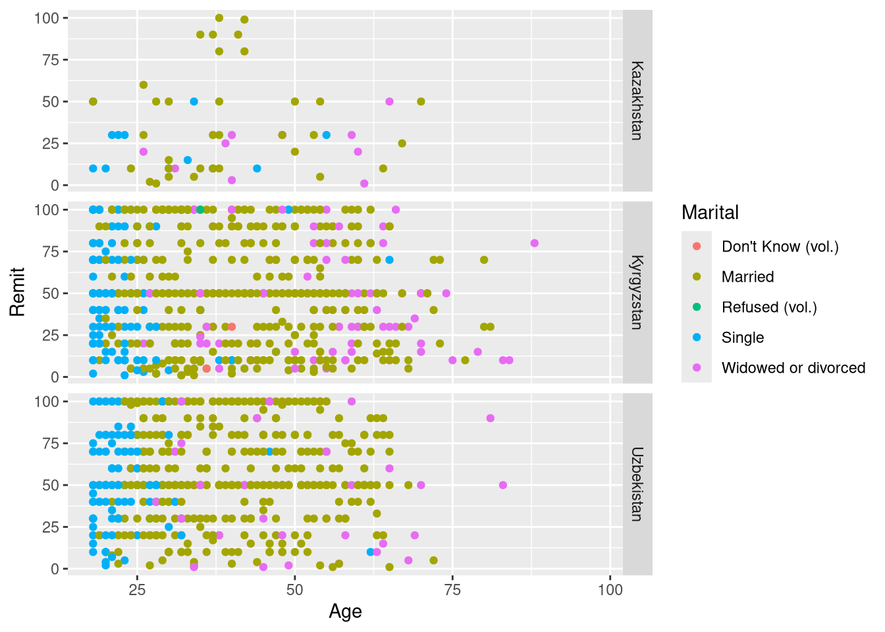
Code
ggplot(my_final_data, aes(y=Remit, x=Age)) +facet_grid(Country~.) +geom_point(aes(color=Marital))+labs(x="age", y="% remittances", title="Remittance as percentage of income")
Warning: Removed 13837 rows containing missing values or values outside the scale range
(`geom_point()`).
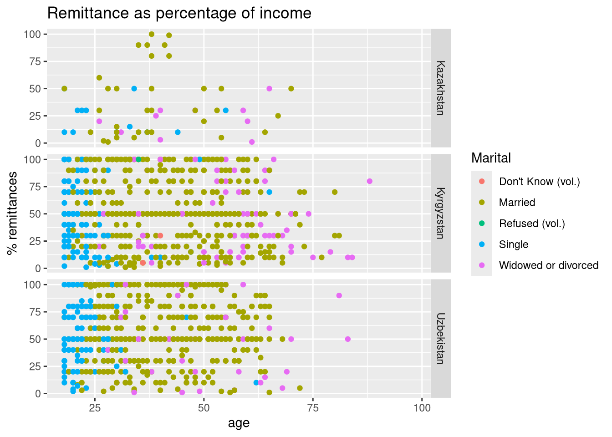
Code
ggplot(my_final_data, aes(x=Remit, y=Age)) +facet_grid(.~Country) +geom_point(aes(color=Marital))+labs(x="age", y="% remittances", title="Remittance as percentage of income")
Warning: Removed 13837 rows containing missing values or values outside the scale range
(`geom_point()`).
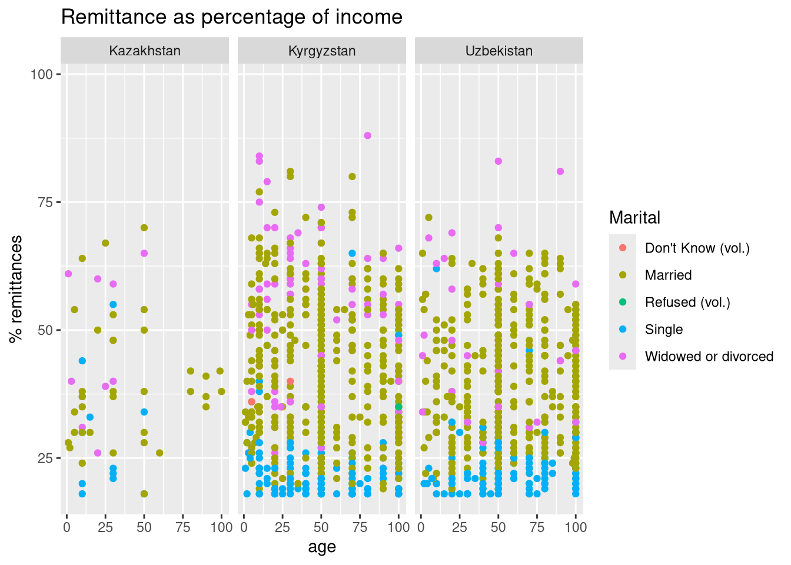
Code
# point sizeggplot(my_final_data, aes(x=Remit, y=Age)) +facet_grid(.~Country) +geom_point(aes(color=Marital), size=3)+labs(x="age", y="% remittances", title="Remittance as percentage of income")
Warning: Removed 13837 rows containing missing values or values outside the scale range
(`geom_point()`).
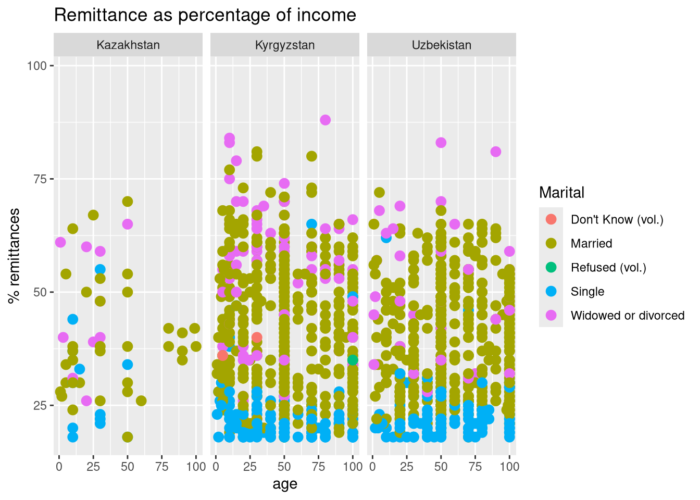
10.4 Bar charts
Note the last tweak there to change the point size, part of the geom_point options. But, since most of our data is categorical, we will get a clearer picture of our data working with bar charts, working our way from very basic, dull examples into examples where we use the power of ggplot to modify the look and feel to convey more complex information and compare our countries and time periods.
10.5 Colors
The RColorBrewer package enables us to apply nicely scaled and shaded sets of colors easily. We can use the R Color Picker to find colors that suit us if we want to use scale_fill_manual to provide a color list (in this case matching country flags). Finally, the page dealing with colors in ggplots gives a wealth of information.
The paletteer package introduces a dizzying array of choice into the color selection, but provides tools, including the Color Palette Finder to make it manageable. The palette names sometimes align with the colors they provide. Do you think the samarqand2 palette matches the colors of the tiles in the Registan?
We can export a graph and save it as an object in R using the assignment operator (<-). This will allow us to easily reuse images in different contexts, even to export and modify them.
Now we’ll use the gridExtra package and its command grid.arrange to combine the three favorability plots into one graphic.
Code
grid.arrange(China,Russia,USA, ncol=1, nrow=3)
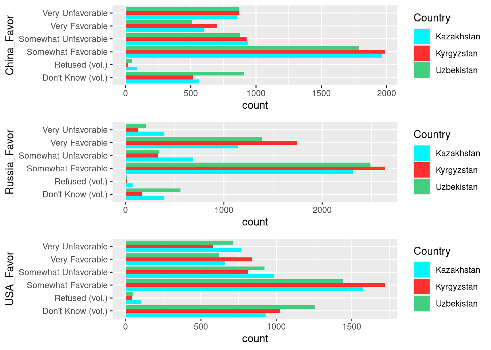
We can export graphs to static saved files on our computer. We initiate the process with a command like pdf to send the output to pdf, or jpeg to send it to an .jpg file. Then run a graphics command (actually a PDF can hold multiple graphs on additional pages). These graphs do not appear on screen because they are being sent to the file. Then run dev.off to stop redirecting output to a file. Afterwards, graphs will appear on screen again.
# Direction by factorsggplot(my_final_data, aes(Direction, fill=Country)) +geom_bar(position="dodge") +scale_fill_manual(values=country_colors)+theme(panel.background =element_rect(fill='beige', colour='darkblue')) +labs(x="Response", y="Count", title="Going in Right or Wrong Direction?")
Code
ggplot(my_final_data, aes(Direction, fill=Country)) +facet_grid(Year~.) +geom_bar(position="dodge") +scale_fill_manual(values=country_colors)+theme(panel.background =element_rect(fill='beige', colour='darkblue')) +labs(x="Response", y="Count", title="Going in Right or Wrong Direction?")
Code
ggplot(my_final_data, aes(Direction_recode, fill=Country)) +facet_grid(Family_Fin_Sit_recode~.) +geom_bar(position="dodge") +scale_fill_manual(values=country_colors) +theme(panel.background =element_rect(fill='beige', colour='darkblue')) +labs(x="Response", y="Count", title="Going in Right or Wrong Direction vs. Family situation?")
10.7 Using the power
We can use the power of the grammar of graphics and assign components of the syntax to different objects, and then string them together. This can help us declutter code and simplify changes and edits (for example, by modifying the theme of all graphs at once).
Code
mydata <-ggplot(my_final_data, aes(Direction_recode, fill=Country)) +facet_grid(Family_Fin_Sit_recode~.) +labs(x="Response", y="Count", title="Going in Right or Wrong Direction vs. Family situation?") +scale_fill_manual(values=country_colors)mytheme <-theme(panel.background =element_rect(fill='beige', colour='darkblue'))mychart <-geom_bar(position="dodge")mydata + mytheme + mychart
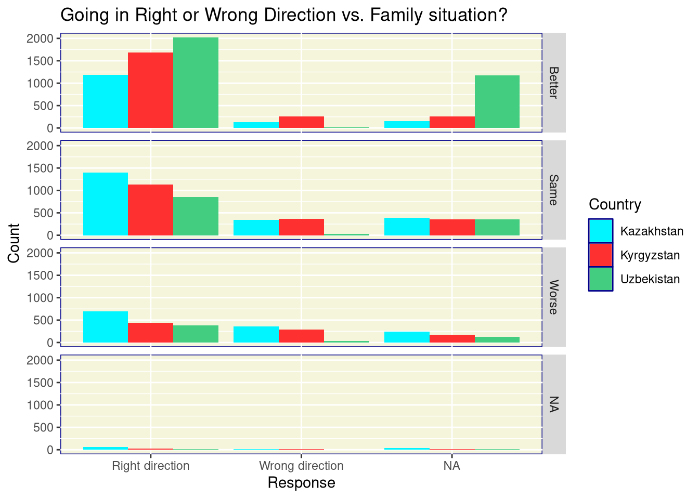
10.8 Other plots
Many other plots are available through ggplot2. A boxplot is shown below. Others can be found at the ggplot2 reference page and the extensions to ggplot2. Note that the ggextra package can add boxplots to the margins of scatterplots. Note the themes exist in packages like ggtheme and cowplot.
Warning: Removed 13837 rows containing non-finite outside the scale range
(`stat_boxplot()`).
10.9 Themes
Add-on packages such as ggthemes (illustrated below), ggsci, ggthemr, and more, help us to quickly change the look and feel of our graphs to suit our purpose.
`geom_smooth()` using method = 'gam' and formula = 'y ~ s(x, bs = "cs")'
Warning: Removed 13837 rows containing non-finite outside the scale range
(`stat_smooth()`).
Warning: Removed 13837 rows containing missing values or values outside the scale range
(`geom_point()`).
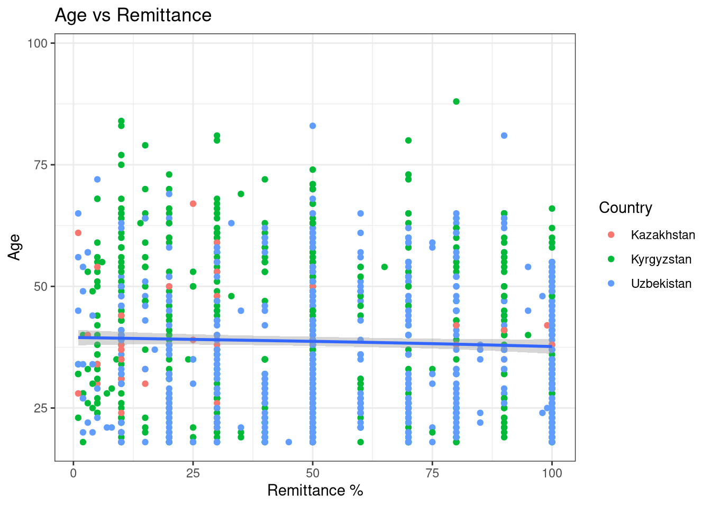
Code
lastplot +theme_cowplot()
`geom_smooth()` using method = 'gam' and formula = 'y ~ s(x, bs = "cs")'
Warning: Removed 13837 rows containing non-finite outside the scale range
(`stat_smooth()`).
Removed 13837 rows containing missing values or values outside the scale range
(`geom_point()`).
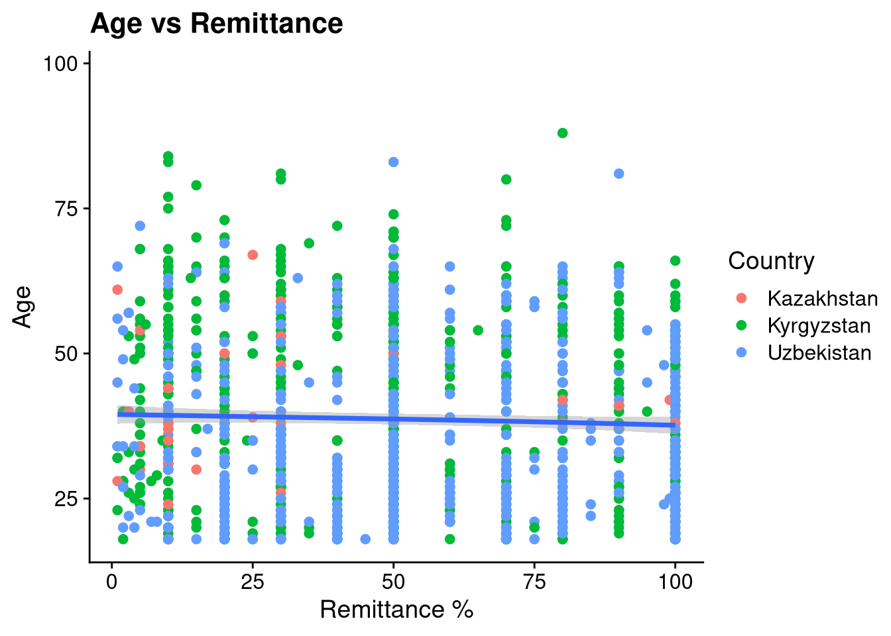
Code
lastplot +theme_dark()
`geom_smooth()` using method = 'gam' and formula = 'y ~ s(x, bs = "cs")'
Warning: Removed 13837 rows containing non-finite outside the scale range
(`stat_smooth()`).
Removed 13837 rows containing missing values or values outside the scale range
(`geom_point()`).
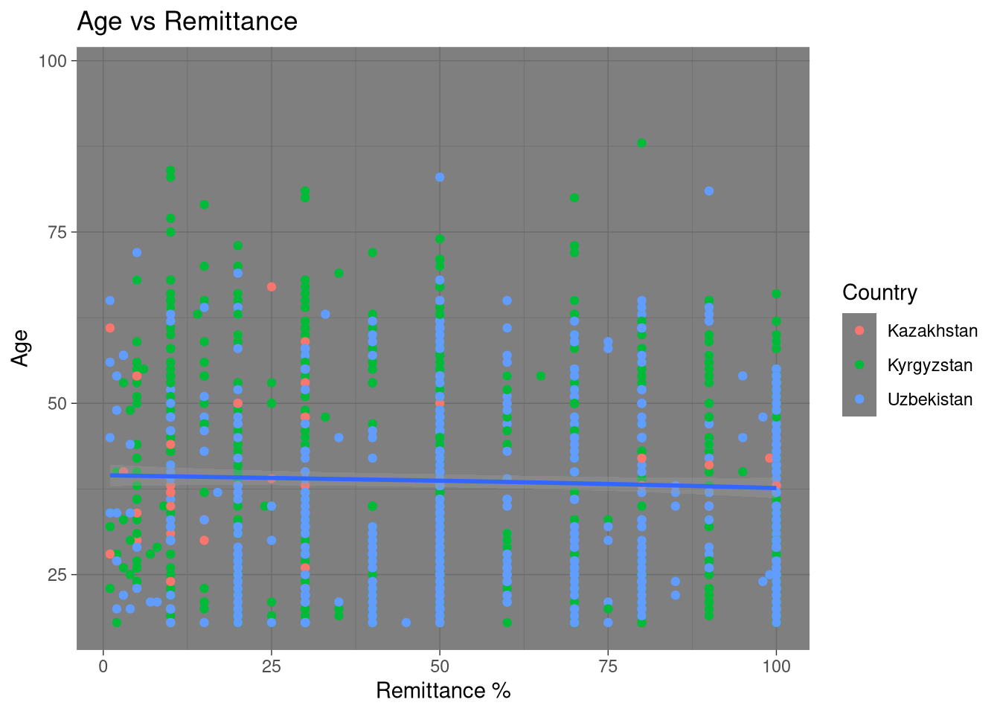
Code
lastplot +theme_economist()
`geom_smooth()` using method = 'gam' and formula = 'y ~ s(x, bs = "cs")'
Warning: Removed 13837 rows containing non-finite outside the scale range
(`stat_smooth()`).
Removed 13837 rows containing missing values or values outside the scale range
(`geom_point()`).
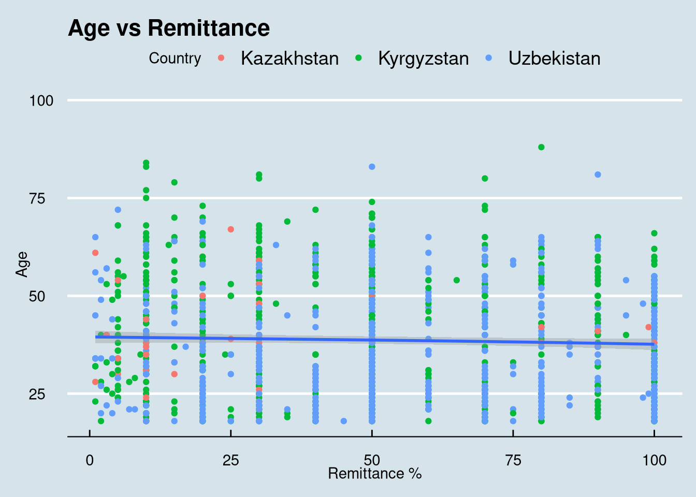
Code
lastplot +theme_fivethirtyeight()
`geom_smooth()` using method = 'gam' and formula = 'y ~ s(x, bs = "cs")'
Warning: Removed 13837 rows containing non-finite outside the scale range
(`stat_smooth()`).
Removed 13837 rows containing missing values or values outside the scale range
(`geom_point()`).
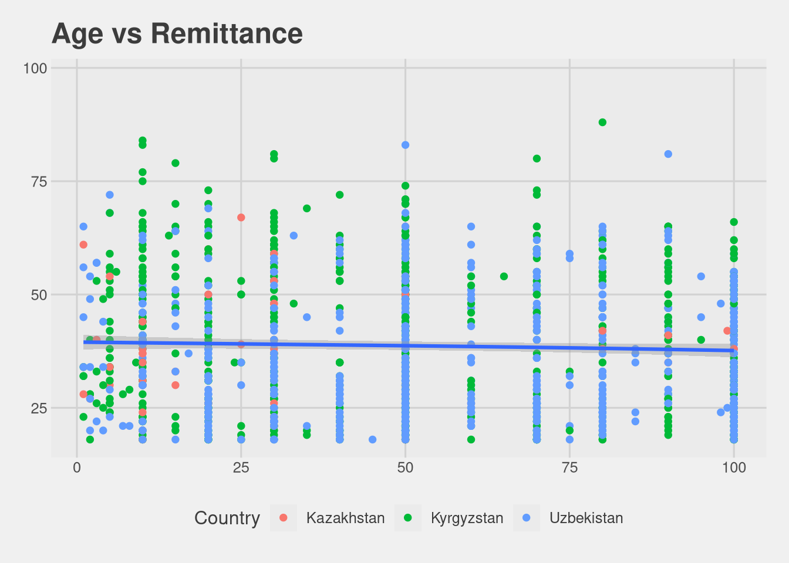
Code
lastplot +theme_tufte()
`geom_smooth()` using method = 'gam' and formula = 'y ~ s(x, bs = "cs")'
Warning: Removed 13837 rows containing non-finite outside the scale range
(`stat_smooth()`).
Removed 13837 rows containing missing values or values outside the scale range
(`geom_point()`).
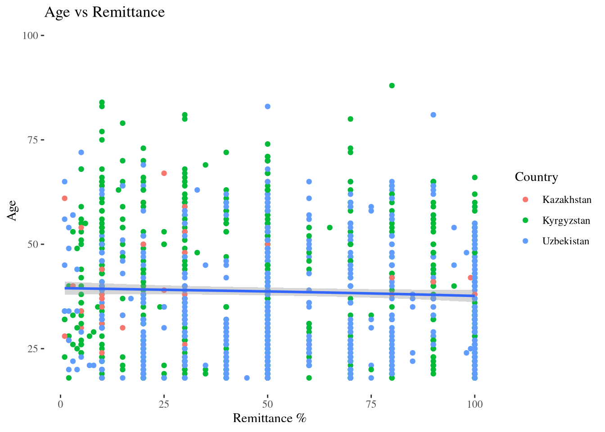
Code
lastplot +theme_wsj()
`geom_smooth()` using method = 'gam' and formula = 'y ~ s(x, bs = "cs")'
Warning: Removed 13837 rows containing non-finite outside the scale range
(`stat_smooth()`).
Removed 13837 rows containing missing values or values outside the scale range
(`geom_point()`).
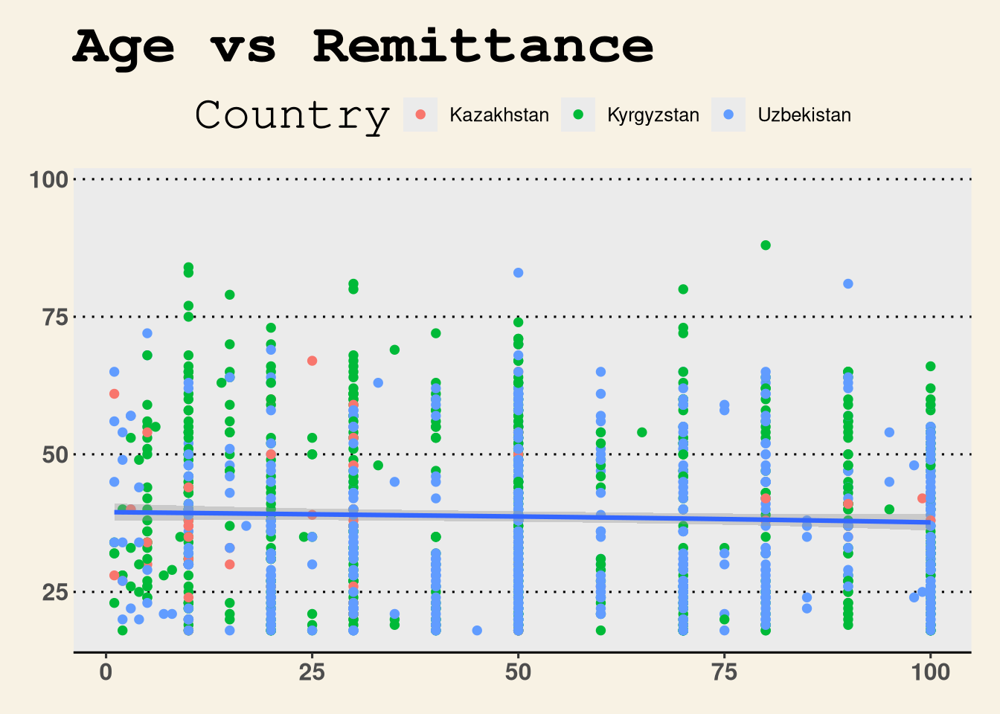
Code
# then with Rcolorbrewerlastplot +theme_economist() +scale_color_brewer(palette ="Set3")
`geom_smooth()` using method = 'gam' and formula = 'y ~ s(x, bs = "cs")'
Warning: Removed 13837 rows containing non-finite outside the scale range
(`stat_smooth()`).
Removed 13837 rows containing missing values or values outside the scale range
(`geom_point()`).
`geom_smooth()` using method = 'gam' and formula = 'y ~ s(x, bs = "cs")'
Warning: Removed 13837 rows containing non-finite outside the scale range
(`stat_smooth()`).
Removed 13837 rows containing missing values or values outside the scale range
(`geom_point()`).
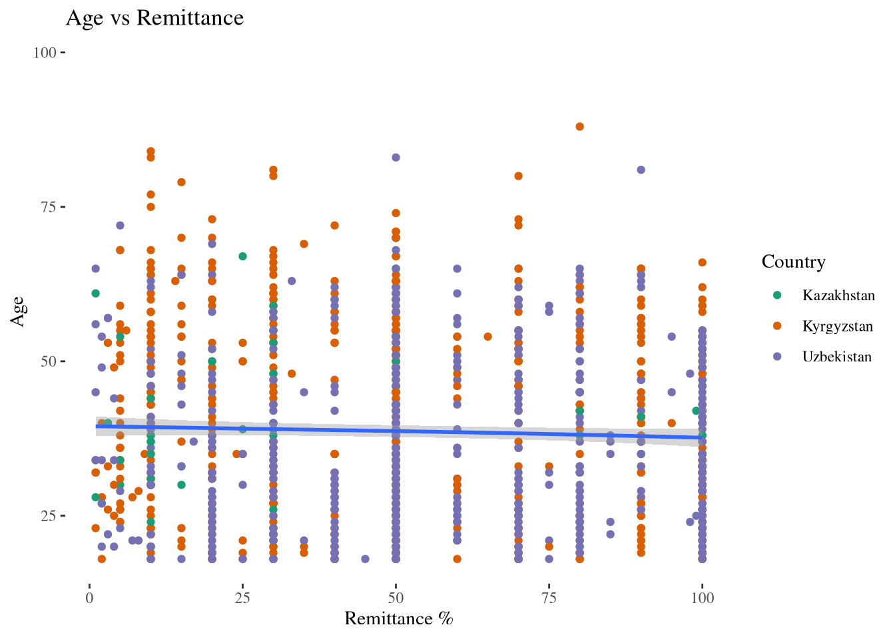
10.10 Interactivity
We give a quick sketch of introducing a bit of interactivity into a graph. There are tools to build fully interactive sites, particular Shiny for R (and now Python). See my Data Visualization 2 workshop for more.
Code
myplot <-ggplot(data = my_final_data,mapping =aes(x = Remit, y = Age,# here we add interactive aestheticstooltip =paste(Country,Marital) )) +geom_point_interactive(size =1, hover_nearest =TRUE )interactive_plot <-girafe(ggobj = myplot)
Warning: Removed 13837 rows containing missing values or values outside the scale range
(`geom_interactive_point()`).
10.11 Processing the data for comparison over time
In order to do something like study the change over time in the “Direction” question - or any of the other variables in this dataset - we have to do a little work to process the data beyond the raw counts we were using in the barcharts above.
In this example, the percentage of people thinking their country is moving in the right direction is computing by extracting the counts and discarding the NAs (only looking at the “Right” and “Wrong” answers). The code does this for each of the nine country and year combinations, and then pastes the results into a small matrix so we can plot the results.
This is one approach to solving the problem, among several other possibilities. For example, one could rename and restructure the data to make it easier to iterate over entries and automate some of this coding. One could also recode data to binary yes/no, 0-1 responses to make math on the proportions easier. In the approach below, the tidyverse package forcats, built to handle categorical data, makes an appearance. For my style of math brain, manually constructing the matrix seems the clearest way to handle this.
Warning: Removed 1 row containing missing values or values outside the scale range
(`geom_line()`).
Code
ggplot(Direction_long, aes(x=Year, y=Value, color=Country)) +geom_line() +theme_tufte() +scale_color_brewer(palette ="Dark2") +labs(title="Right Direction over time", y="Percentage")
Warning: Removed 1 row containing missing values or values outside the scale range
(`geom_line()`).
11 Further statistical analysis
11.1 Stepwise regresssion
As another brief example of statistical analysis, we can try a stepwise regression to predict the answer to the right direction question. Logistic regression is the suitable method for when the outcome is a binary choice (yes/no, true/false, right/wrong).
Code
lm(data=my_final_data, Remit ~ .)
Call:
lm(formula = Remit ~ ., data = my_final_data)
Coefficients:
(Intercept)
1.025e+02
SexMale
-5.143e+00
Age
8.998e-03
MaritalSingle
-3.198e+00
MaritalWidowed or divorced
-3.078e+00
EducationComplete school
2.140e+00
EducationComplete vocational - vocational school, lyceum, etc.
-1.424e+00
EducationFinished school
3.207e+00
EducationIncomplete higher education
4.132e-01
EducationIncomplete school
1.371e+01
EducationIncomplete vocational education
3.607e+00
EducationNo education
2.024e+01
EducationVocational (vocational school, lyceum etc.)
2.742e+00
EmploymentA housewife / househusband
-7.413e+00
EmploymentA student
1.090e+00
EmploymentRetired
-1.561e+01
EmploymentUnemployed and actively seeking employment
1.931e+00
EmploymentUnemployed and not actively seeking employment
7.137e+00
EmploymentWorking full-time
-1.231e+01
EmploymentWorking part-time
-1.316e+01
DirectionWrong direction
5.883e-01
China_FavorRefused (vol.)
2.836e+01
China_FavorSomewhat Favorable
-4.770e-01
China_FavorSomewhat Unfavorable
7.221e+00
China_FavorVery Favorable
2.588e+00
China_FavorVery Unfavorable
7.166e-01
Russia_FavorRefused (vol.)
-8.448e+01
Russia_FavorSomewhat Favorable
-1.045e+00
Russia_FavorSomewhat Unfavorable
-4.756e+00
Russia_FavorVery Favorable
1.593e+00
Russia_FavorVery Unfavorable
-9.045e+00
USA_FavorRefused (vol.)
4.003e+01
USA_FavorSomewhat Favorable
-3.250e+00
USA_FavorSomewhat Unfavorable
-6.396e+00
USA_FavorVery Favorable
3.120e-01
USA_FavorVery Unfavorable
4.342e+00
Main_NewsFamily, friends, or neighbors
-3.346e+01
Main_NewsInternet
-3.057e+01
Main_NewsInternet: blogs, others
-3.226e+01
Main_NewsNon-government newspapers published in our country
-5.251e+01
Main_NewsNone / Not interested in news (vol.)
-4.714e+01
Main_NewsOther (vol.)
-1.381e+01
Main_NewsOur country's national television stations
-2.940e+01
Main_NewsOur government's newspapers
-4.035e+01
Main_NewsRadio
2.402e+01
Main_NewsReligious services or literature
-3.556e+01
Main_NewsRussian television stations
-5.486e+01
Main_NewsSocial media sites or messengers
-3.389e+01
LanguageKarakalplak
-1.140e+01
LanguageKazakh
-2.420e+01
LanguageKyrgyz
-2.518e+01
LanguageOther
-8.257e+01
LanguageOther (vol.)
-1.804e+01
LanguageRussian
-2.891e+01
LanguageTajik
6.440e+00
LanguageTurkmen
-1.027e+02
LanguageUzbek
-6.066e+00
Country_Fin_SitDon't Know (vol.)
-6.027e+00
Country_Fin_SitMuch Better
-1.649e+00
Country_Fin_SitMuch Worse
1.232e+01
Country_Fin_SitRefused (vol.)
3.010e+01
Country_Fin_SitSomewhat Better
4.447e+00
Country_Fin_SitSomewhat Worse
6.906e+00
Family_Fin_SitBecome Better
-6.082e+00
Family_Fin_SitBecome Worse
-7.769e+00
Family_Fin_SitMuch better
-5.003e+00
Family_Fin_SitMuch worse
-6.092e+00
Family_Fin_SitSomewhat better
-4.648e+00
Family_Fin_SitSomewhat worse
-4.229e+00
Family_Fin_SitStayed the Same
-5.070e+00
CountryKyrgyzstan
1.216e+01
CountryUzbekistan
8.194e+00
Year
NA
Marital_recodeSingle
NA
Marital_recodeWidowed or divorced
NA
Employment_recodeA housewife / househusband
NA
Employment_recodeA student
NA
Employment_recodeRetired
NA
Employment_recodeUnemployed and actively seeking employment
NA
Employment_recodeUnemployed and not actively seeking employment
NA
Employment_recodeWorking full-time
NA
Employment_recodeWorking part-time
NA
Employment_recode2Housewife
NA
Employment_recode2Retired
NA
Employment_recode2Unemployed
NA
Employment_recode2Working
NA
Direction_recodeWrong direction
NA
Family_Fin_Sit_recodeSame
NA
Family_Fin_Sit_recodeWorse
NA
Code
lm(data=my_final_data, Remit ~ Year)
Call:
lm(formula = Remit ~ Year, data = my_final_data)
Coefficients:
(Intercept) Year
4879.037 -2.389
Code
regression_output <-lm(Remit ~ Sex + Language, data=my_final_data)summary(regression_output)
regression_output_all_demographic <-lm(Remit ~ Sex + Age + Language + Employment + Education + Country + Year, data=my_final_data)summary(regression_output_all_demographic)
Call:
lm(formula = Remit ~ Sex + Age + Language + Employment + Education +
Country + Year, data = my_final_data)
Residuals:
Min 1Q Median 3Q Max
-62.284 -21.452 -0.478 20.883 74.774
Coefficients:
Estimate
(Intercept) -71.97361
SexMale -3.68612
Age 0.07580
LanguageKarakalpak -17.81780
LanguageKarakalplak -5.15660
LanguageKazakh -20.10909
LanguageKyrgyz -21.52807
LanguageOther -39.59865
LanguageOther (vol.) -16.25928
LanguageRefused (vol.) -17.19801
LanguageRussian -30.42818
LanguageTajik -15.26527
LanguageTurkmen -45.06972
LanguageUzbek -6.81348
EmploymentA housewife / househusband -12.57774
EmploymentA student -6.50282
EmploymentDon't Know (vol.) -25.14740
EmploymentRefused (vol.) 42.82873
EmploymentRetired -20.65655
EmploymentUnemployed and actively seeking employment -3.45304
EmploymentUnemployed and not actively seeking employment -2.05662
EmploymentWorking full-time -17.75971
EmploymentWorking part-time -16.95468
EducationComplete school -3.18996
EducationComplete vocational - vocational school, lyceum, etc. 0.38482
EducationFinished school 5.16304
EducationIncomplete higher education 0.87363
EducationIncomplete school 5.74694
EducationIncomplete vocational education 3.20953
EducationNo education -11.19255
EducationVocational (vocational school, lyceum etc.) 2.93201
CountryKyrgyzstan 8.43419
CountryUzbekistan 2.44885
Year 0.07083
Std. Error
(Intercept) 1704.63557
SexMale 1.91440
Age 0.07944
LanguageKarakalpak 29.71893
LanguageKarakalplak 30.14348
LanguageKazakh 28.76249
LanguageKyrgyz 28.65775
LanguageOther 40.47050
LanguageOther (vol.) 30.19320
LanguageRefused (vol.) 40.38517
LanguageRussian 28.47748
LanguageTajik 29.03213
LanguageTurkmen 32.92324
LanguageUzbek 28.65380
EmploymentA housewife / househusband 3.79413
EmploymentA student 4.39810
EmploymentDon't Know (vol.) 20.15057
EmploymentRefused (vol.) 28.29363
EmploymentRetired 3.91040
EmploymentUnemployed and actively seeking employment 4.05323
EmploymentUnemployed and not actively seeking employment 4.21557
EmploymentWorking full-time 3.41131
EmploymentWorking part-time 3.90417
EducationComplete school 3.06981
EducationComplete vocational - vocational school, lyceum, etc. 3.20755
EducationFinished school 3.59326
EducationIncomplete higher education 4.30015
EducationIncomplete school 5.43586
EducationIncomplete vocational education 4.38735
EducationNo education 16.48783
EducationVocational (vocational school, lyceum etc.) 3.84373
CountryKyrgyzstan 5.46578
CountryUzbekistan 5.65653
Year 0.84373
t value Pr(>|t|)
(Intercept) -0.042 0.966329
SexMale -1.925 0.054415
Age 0.954 0.340186
LanguageKarakalpak -0.600 0.548928
LanguageKarakalplak -0.171 0.864200
LanguageKazakh -0.699 0.484603
LanguageKyrgyz -0.751 0.452677
LanguageOther -0.978 0.328053
LanguageOther (vol.) -0.539 0.590330
LanguageRefused (vol.) -0.426 0.670297
LanguageRussian -1.068 0.285518
LanguageTajik -0.526 0.599123
LanguageTurkmen -1.369 0.171286
LanguageUzbek -0.238 0.812089
EmploymentA housewife / househusband -3.315 0.000945
EmploymentA student -1.479 0.139532
EmploymentDon't Know (vol.) -1.248 0.212293
EmploymentRefused (vol.) 1.514 0.130369
EmploymentRetired -5.282 1.52e-07
EmploymentUnemployed and actively seeking employment -0.852 0.394433
EmploymentUnemployed and not actively seeking employment -0.488 0.625740
EmploymentWorking full-time -5.206 2.28e-07
EmploymentWorking part-time -4.343 1.53e-05
EducationComplete school -1.039 0.298956
EducationComplete vocational - vocational school, lyceum, etc. 0.120 0.904525
EducationFinished school 1.437 0.151025
EducationIncomplete higher education 0.203 0.839043
EducationIncomplete school 1.057 0.290628
EducationIncomplete vocational education 0.732 0.464595
EducationNo education -0.679 0.497377
EducationVocational (vocational school, lyceum etc.) 0.763 0.445736
CountryKyrgyzstan 1.543 0.123082
CountryUzbekistan 0.433 0.665150
Year 0.084 0.933108
(Intercept)
SexMale .
Age
LanguageKarakalpak
LanguageKarakalplak
LanguageKazakh
LanguageKyrgyz
LanguageOther
LanguageOther (vol.)
LanguageRefused (vol.)
LanguageRussian
LanguageTajik
LanguageTurkmen
LanguageUzbek
EmploymentA housewife / househusband ***
EmploymentA student
EmploymentDon't Know (vol.)
EmploymentRefused (vol.)
EmploymentRetired ***
EmploymentUnemployed and actively seeking employment
EmploymentUnemployed and not actively seeking employment
EmploymentWorking full-time ***
EmploymentWorking part-time ***
EducationComplete school
EducationComplete vocational - vocational school, lyceum, etc.
EducationFinished school
EducationIncomplete higher education
EducationIncomplete school
EducationIncomplete vocational education
EducationNo education
EducationVocational (vocational school, lyceum etc.)
CountryKyrgyzstan
CountryUzbekistan
Year
---
Signif. codes: 0 '***' 0.001 '**' 0.01 '*' 0.05 '.' 0.1 ' ' 1
Residual standard error: 27.96 on 1158 degrees of freedom
(13837 observations deleted due to missingness)
Multiple R-squared: 0.1682, Adjusted R-squared: 0.1445
F-statistic: 7.096 on 33 and 1158 DF, p-value: < 2.2e-16
Code
backward_model <-step(regression_output_all_demographic, direction ="backward")
Start: AIC=7973.94
Remit ~ Sex + Age + Language + Employment + Education + Country +
Year
Df Sum of Sq RSS AIC
- Education 8 4919 910094 7964.4
- Year 1 6 905181 7971.9
- Age 1 712 905887 7972.9
<none> 905176 7973.9
- Country 2 3399 908575 7974.4
- Sex 1 2898 908074 7975.7
- Language 11 35971 941146 7998.4
- Employment 9 48953 954128 8018.7
Step: AIC=7964.4
Remit ~ Sex + Age + Language + Employment + Country + Year
Df Sum of Sq RSS AIC
- Age 1 691 910785 7963.3
<none> 910094 7964.4
- Country 2 3330 913425 7964.7
- Year 1 2187 912281 7965.3
- Sex 1 2728 912822 7966.0
- Language 11 37583 947678 7990.6
- Employment 9 52830 962924 8013.7
Step: AIC=7963.3
Remit ~ Sex + Language + Employment + Country + Year
Df Sum of Sq RSS AIC
<none> 910785 7963.3
- Country 2 3419 914204 7963.8
- Sex 1 2591 913376 7964.7
- Year 1 2619 913404 7964.7
- Language 11 37645 948430 7989.6
- Employment 9 57584 968369 8018.4
Code
# Print the summary of the selected modelsummary(backward_model)
We haven’t even touching on machine learning algorithms. Those will require even more careful data cleaning to be used effectively with this somewhat messy real-world data. But things like clustering, trees and random forests, and other methods might be able to effectively group the data, find patterns, and make predictions. See the tidymodels package mentioned below.
13 Conclusion
There is no one stopping point for data analysis. Keep going until you have a full understanding of the data and its interaction with the questions you seek to answer!
Consult the R for Data Science book to learn more about data wrangling. Also check out tidymodels a collection of packages for modeling and machine learning using tidyverse principles.